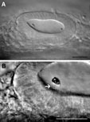

Zebrafish Anatomical Dictionary
Structure description: otolith
Name: otolith
Abbreviation:
None
Synonyms: None
Figures:

otoliths
Description: Stony accretions of
crystalline calcium carbonate and protein. These develop over the anterior and
posterior maculae
in the ear and are tethered in place by a gelatinous
otolithic membrane, into which the macular hair
cells project. From 18-22h, many small crystalline particles are present
throughout the lumen of the ear, where they are agitated and distributed by
beating cilia. From 18.5h onwards, the particles coalesce to form the two otoliths;
these initially appear as irregular clumps of material at the anterior and posterior
ends of the otic vesicle. After 24h, few free
particles are observed, and the otoliths grow in size, acquiring distinctive
shapes and sizes during the larval period.
Homologues:
- Human:
otoconia
- Mouse:
otoconia
- Chicken:
otoconia
- Frog:
otoliths
- Fly:
none
Stages:
- First appears at:
18h
- Disappears (or changes name)
at:
Unknown
Parents (forms from):
Supporting cells are thought to give rise to the correct
milieu in which the otoliths can precipitate. Hair
cells or non-sensory cell, may also play a role (see Haddon
et al., 1999). Otoliths nucleate over hair cell precursors ("tether cells")
at the anterior and posterior ends of the otic vesicle
(Riley et
al., 1997).
Children:
- Presumptive (thought
to give rise to): Adult
otoliths. The adult fish has 3 otoliths in each ear: the sagitta of the saccule,
the lapillus of the utricle and the astericus of the lagena. The anterior
otolith of the embryo is probably the precursor of the lapillus of the adult,
and the posterior otolith is probably the precursor of the sagitta. It is
not known when the astericus (and its associated sensory
patch, the lagena) arise.
- Anlage (known to give
rise to): Unknown
Group (member of):
- Anatomical (group member):
ear
- Functional (group member):
auditory, vestibular
system
Markers:
- mRNA:
None
- Antibodies:
None
- Other:
Otoliths are easily visible in the live embryo
under dissecting and compound microscopes without the need for a special stain.
The free particles at early stages can be visualised in the live embryo with
DIC optics using a high magnification objective.
Publications:
- Primary:
Haddon,
C., and Lewis, J. (1996). Early ear development in the embryo of the zebrafish,
Danio rerio. Journal of Comparative Neurology 365, 113-123.
- Secondary:
Haddon,
C., Mowbray, C., Whitfield, T., Jones, D., Gschmeissner, S., and Lewis, J.
(1999). Hair cells without supporting cells: further studies in the ear of
the zebrafish mind bomb mutant. Journal of Neurocytology 28, 837-850.
Malicki,
J., Schier, A. F., Solnica-Krezel, L., Stemple, D. L., Neuhauss, S. C. F.,
Stainier, D. Y. R., Abdelilah, S., Rangini, Z., Zwartkruis, F., and Driever,
W. (1996). Mutations affecting development of the zebrafish ear. Development
123, 275-283.
Platt,
C. (1993). Zebrafish inner ear sensory surfaces are similar to those in
goldfish. Hearing Research 65, 133-140..
Riley,
B. B., Chiang, M.-Y., Farmer, L., and Heck, R. (1999). The deltaA gene of
zebrafish mediates lateral inhibition of hair cells in the inner ear and
is regulated by pax2.1. Development 126, 5669-5678.
Riley,
B. B., and Moorman, S. J. (2000). Development of utricular otoliths, but
not saccular otoliths, is necessary for vestibular function and survival
in zebrafish. Journal of Neurobiology 43, 329-337.
Riley,
B. B., Zhu, C., Janetopoulos, C., and Aufderheide, K. J. (1997). A critical
period of ear development controlled by distinct populations of ciliated
cells in the zebrafish. Developmental Biology 191, 191-201.
Whitfield,
T. T., Granato, M., van Eeden, F. J. M., Schach, U., Brand, M., Furutani-Seiki,
M., Haffter, P., Hammerschmidt, M., Heisenberg, C.-P., Jiang, Y.-J., Kane,
D. A., Kelsh, R. N., Mullins, M. C., Odenthal, J., and Nüsslein-Volhard,
C. (1996). Mutations affecting development of the zebrafish inner ear and
lateral line. Development 123, 241-254.
Comments:
None